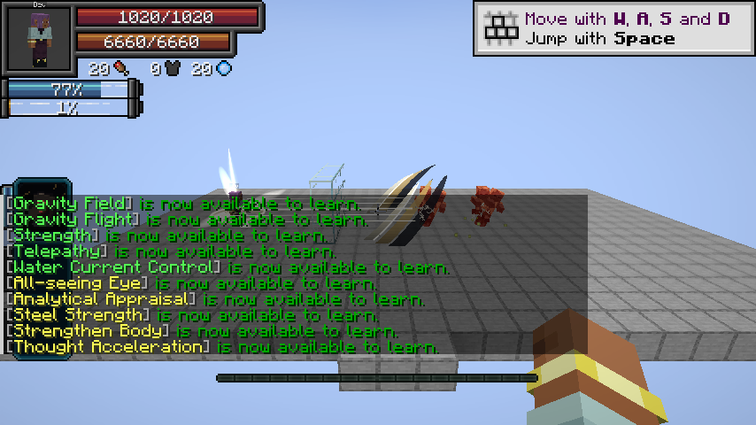

Chained automatically evolves into this Ultimate when you are Heavenbreaker, fully master Chained, and become a True Hero or True Demon Lord.
Retained pact
Retains Chained’s restrictions, aura growth and regeneration conversion. Presets and progress carry over.
Improved combat
- Toggle: 8× Battlewill damage or 5× other Physical damage; 4× numeric Battlewill buffs except Aura Sword. The damage branches remain separate.
- In slot: 30% damage reduction, 100% projectile dodge and 50% other dodge. Retains Fear, Slowness, Burden and Haki immunity.
- Mastered Broken Limit retains resistance degradation and dodge bypass, and makes your attacks critical hits.
Severance Rush
Damage type: Physical.
The same 16-block aim teleport and Physical path/arrival formulas as Chained. Cost: 2% current aura. Cooldown: 1 second. Held weapon effects apply.
Counter
Damage type: Physical.
- Press to hold a defensive stance for 3 seconds with movement speed 0. The first eligible enemy hit is negated and releases a terrain-piercing slash toward the attacker, hitting other enemies along its path.
- Cost: 10% current aura on entry. Cooldown: 10 seconds. Press again to cancel early for free.
- Physical base damage: 10 × negated damage + 6 × √A + W. The released weapon’s damage, enchantments and engravings apply; toggle bonuses and critical hits then apply.
Related
Chained · Inverted Spear of Heaven
Pictures and video
